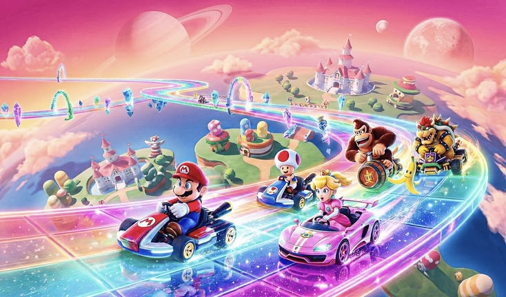
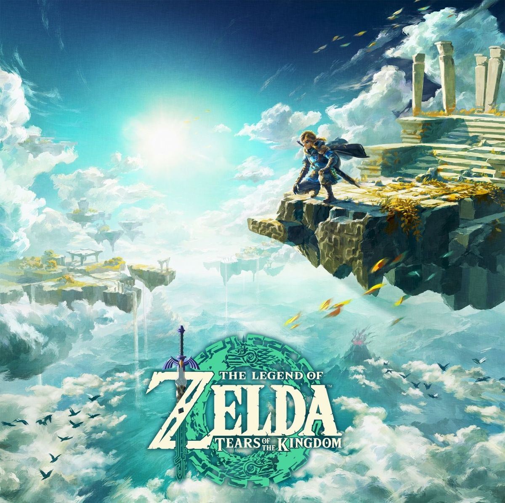
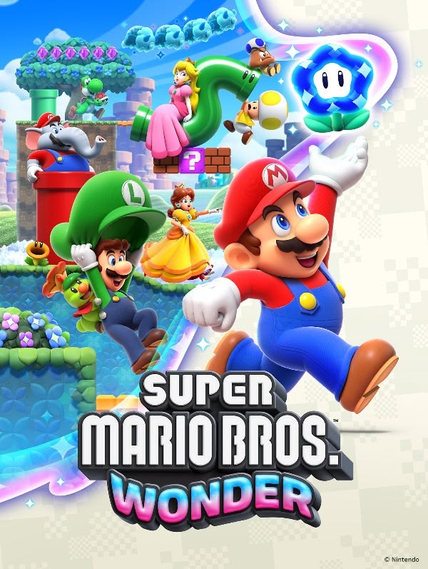
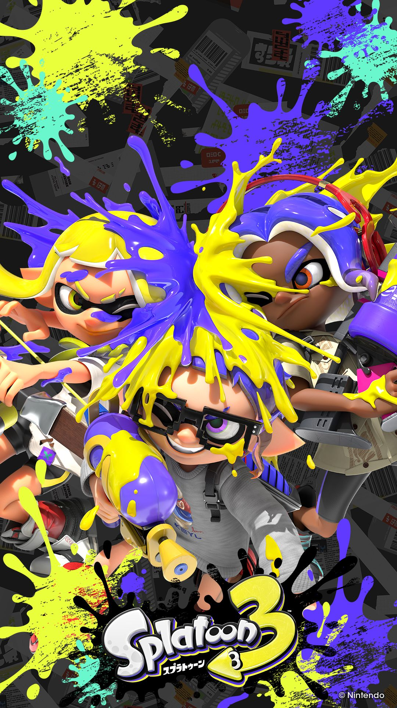

Um Projeto Integrador que une modelagem 3D e desenvolvimento web para apresentar um produto real: o console Nintendo Switch recriado em HTML, CSS e JavaScript, usando como ponto de partida visual a modelagem 3D produzida pelo grupo.
Esse Projeto Integrador existe pra colocar em prática — e demonstrar — o que o grupo aprendeu ao longo do ano, tanto na modelagem 3D quanto no desenvolvimento web.
Um console que se transforma: sai da base na sala e vira portátil em segundos, sem perder desempenho.
Lançado pela Nintendo, o Switch combina os dois mundos do videogame: jogar na TV, no modo mesa ou direto na tela do próprio aparelho. Os controles Joy-Con se encaixam nas laterais e podem ser destacados para jogos multiplayer a qualquer momento.
Um catálogo em expansão, com vantagens de quem joga no ecossistema Switch.




Modelo 3D do console, renderizado para este projeto.
Três modos de jogo em um único aparelho.
Da modelagem 3D ao código publicado — etapa por etapa.
Projeto desenvolvido para o curso técnico de Multimídia, unindo modelagem 3D e desenvolvimento web em um <<<<<<< HEAD único trabalho. Todo o conteúdo visto ao longo do curso — HTML, CSS, JavaScript, Blender e animação 3D — foi aplicado na construção deste site. ======= único trabalho. Todo o conteúdo visto ao longo do curso — HTML, CSS, JavaScript, blender e animação 3D foram aplicados na construção deste site. >>>>>>> 95bf11801c163c2a4e3704f6d4ff6554bdcd977d